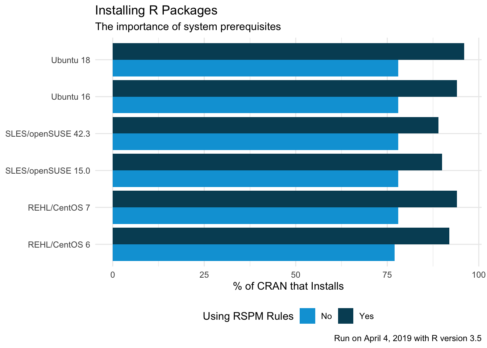
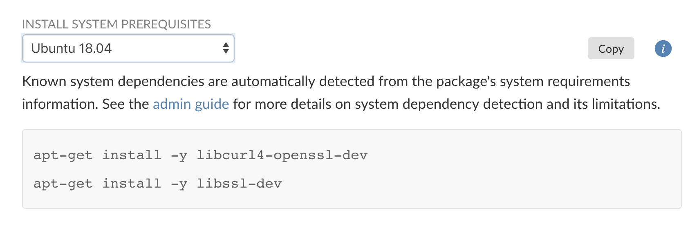
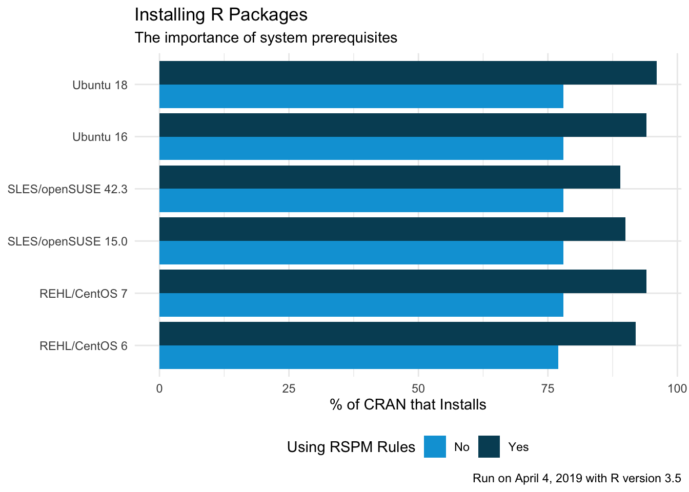
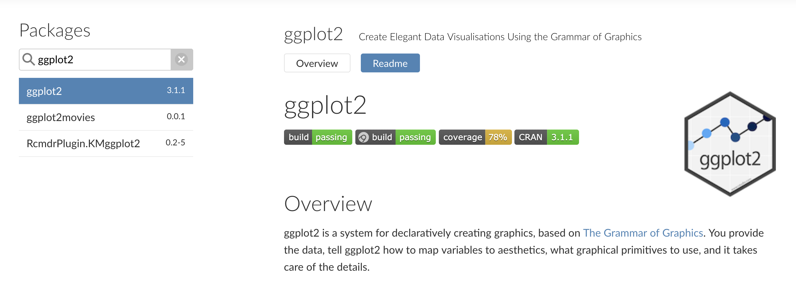

2019-04-18
Installing R packages on Linux systems has always been a risky affair. In RStudio Package Manager 1.0.8, we’re giving administrators and R users the information they need to make installing packages easier. We’ve also made it easier to use Package Manager offline and improved search performance.
Download the 45-day evaluation today to see how RStudio Package Manager can help you, your team, and your entire organization access and organize R packages. Learn more with our online demo server or latest webinar.

R packages can depend on one another, but they can also depend on software external to the R ecosystem. On Ubuntu 18.04, for example, in order to install the curl R package, you must have previously run apt-get install libcurl. R packages often note these dependencies inside their DESCRIPTION files, but this information is free-form text that varies by package. In the past, system administrators would need to manually parse these files. In order to install ggplot2, you’d need to look at the system requirements for ggplot2 and all its dependencies. This labor-intensive process rarely goes smoothly. Frequently, system dependencies are not be uncovered until a package failed to install, often with a cryptic error message that can leave R users and administrators frantically searching StackOverflow.
To address this problem, we’ve begun cataloging and testing system prerequisites. The result is a list of install commands available for administrators and R users. We’ve tested this list by installing all 14,024 CRAN packages across six Linux distributions.

For any package, Package Manager shows you if there are system pre-requisites and the commands you can use to install them. Today this support is limited to Linux, but we plan to support Windows and Mac requirements in the future. Package Manager automatically rolls up prerequisites for dependent R packages. As an example, the httr R package depends on the curl package which depends on libcurl. Package Manager will show the libcurl prerequisite for the httr package–and for all of httr’s reverse dependencies!
In most cases, RStudio Package Manager provides the checks and governance controls needed by IT to bridge the gap between offline production systems and RStudio’s public CRAN service. However, in certain cases it may be necessary to run RStudio Package Manager offline. Version 1.0.8 introduces a new tool to help offline customers. A new utility has been created to make cloning packages into an air-gapped environment safe and fast.
In addition to these major changes, the new release includes the following updates:

Please review the full release notes.
Upgrade Planning
Upgrading to 1.0.8 from 1.0.6 will take less than five minutes. If you are upgrading from an earlier version, be sure to consult the release notes for the intermediate releases, as well.
Don’t see that perfect feature? Wondering why you should be worried about package management? Want to talk about other package-management strategies? Email us, our product team is happy to help!